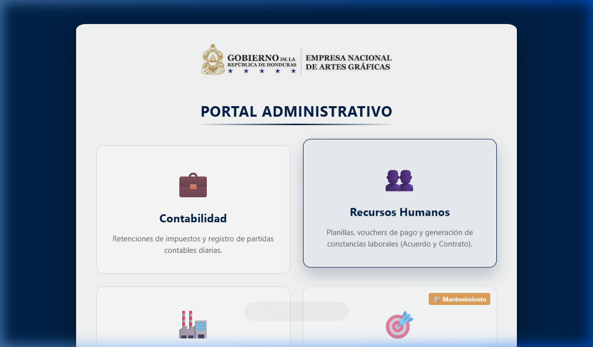
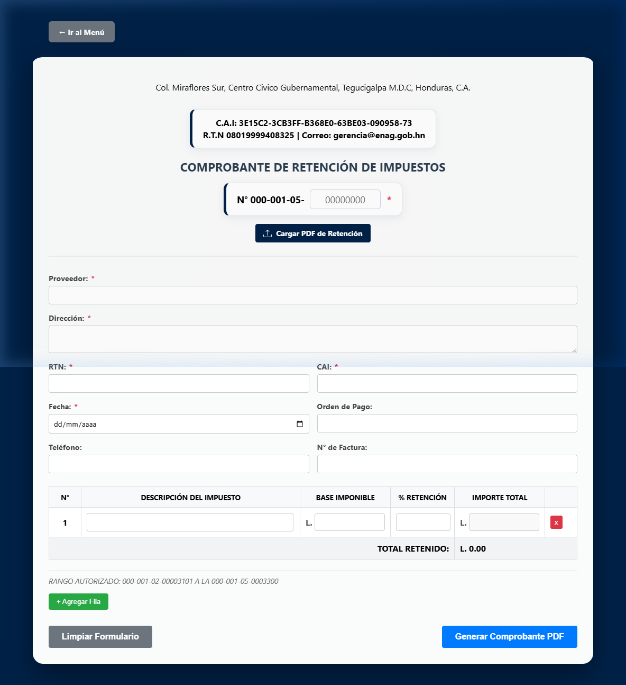
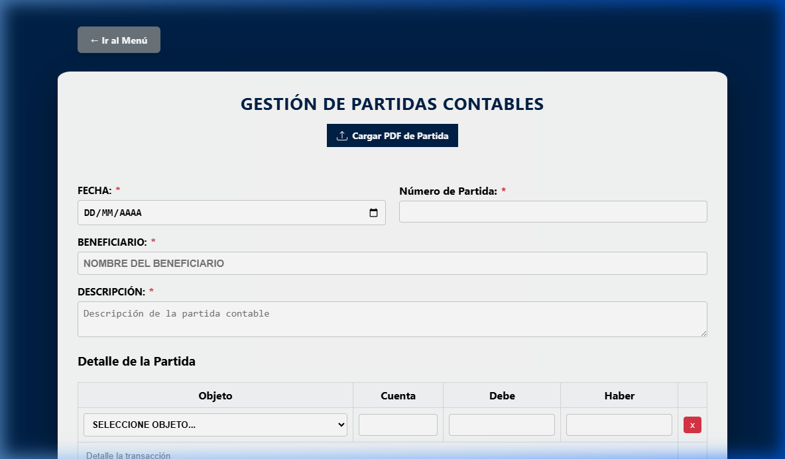
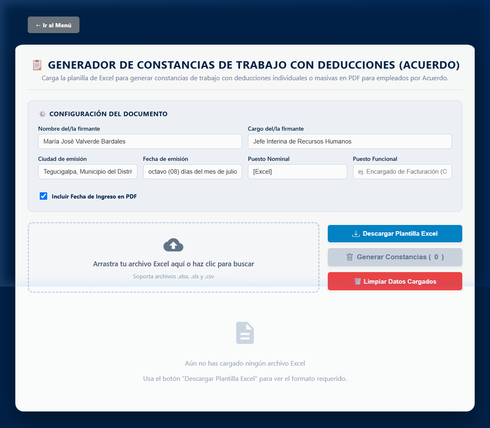
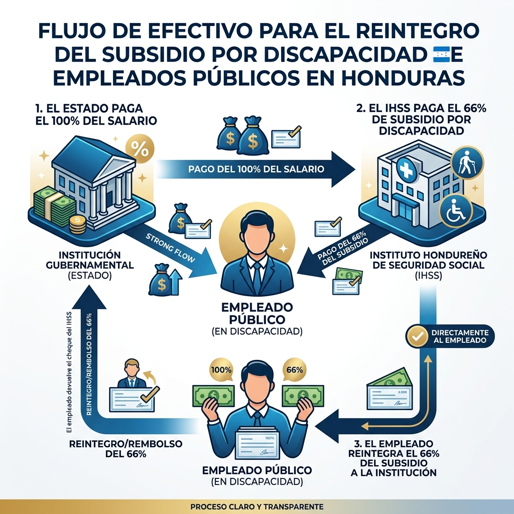
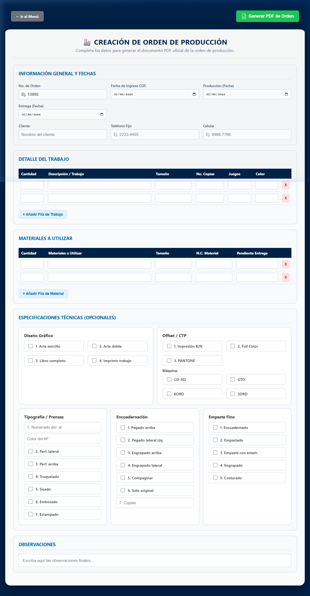

Bienvenido al Sistema Integral de Gestión de la Empresa Nacional de Artes Gráficas (ENAG). Esta plataforma centraliza y optimiza los flujos de trabajo de Contabilidad, Comercialización, Recursos Humanos y Talleres de Producción.
Autenticación Oficial y Seguridad
El sistema cuenta con un control de acceso formal respaldado por Firebase Authentication:
Inicio de Sesión (login.html): Se ingresa mediante correo electrónico institucional verificado y contraseña segura.
Verificación Obligatoria de Correo: Para resguardar los datos públicos, solo los usuarios con correo verificado pueden interactuar con el sistema.
Control de Sesión Única (Anticoncurrencia): Por motivos de auditoría y seguridad, si una cuenta inicia sesión en un equipo diferente, la sesión previa se cerrará de forma automática.
Recuperación de Contraseña: Los usuarios pueden restablecer su clave mediante el enlace oficial de recuperación que envía un correo seguro a su bandeja de entrada.
Accesos Departamentales y PINes Rápidos
En el portal principal, las secciones departamentales cuentan con validación de acceso:
Módulo de Contabilidad: Clave departamental CONTA@2026.
Módulo de Recursos Humanos: Clave departamental 1212.
Módulo de Comercialización y Producción: Acceso directo para personal autorizado.

Figura 1: Interfaz principal del Portal Administrativo de la ENAG.
⚠️ Recomendación de Seguridad:
Nunca revele su contraseña a terceros. Al finalizar su turno laboral, utilice el botón de "Cerrar Sesión" para proteger su usuario en la bitácora institucional.
2. Módulo de Contabilidad
Diseñado para la gestión tributaria, emisión de comprobantes de retención conforme al SAR y registro de asientos del libro diario contable.
2.1. Retenciones de Impuestos
Permite liquidar e imprimir los comprobantes oficiales de retención para compras del Estado:
Ingrese el Nombre del Proveedor, RTN y el Concepto de la factura.
Digite el Monto Bruto de la compra o servicio recibido.
Seleccione el porcentaje aplicable (ej. 1% para compras ordinarias o 12.5% para honorarios profesionales). El sistema calcula de forma instantánea el valor retenido y el neto a pagar.
Presione "Descargar Comprobante PDF" para obtener el documento oficial membretado y listo para firmas.

Figura 2: Formulario de emisión de Retenciones de Impuestos.
2.2. Registro de Partidas Contables (Diario)
Registra las partidas diarias garantizando el principio de partida doble:
Indique la fecha y el concepto detallado del asiento contable.
Agregue las cuentas correspondientes asignando valores al Debe y al Haber.
Regla de Cuadre Estricto: La suma del Debe debe ser idéntica a la suma del Haber. Si existe un descuadre (por mínimo que sea), el sistema impedirá el guardado para evitar incongruencias contables.

Figura 3: Registro de Partidas Contables de Diario con validación de cuadre.
2.3. Partidas Contables al Crédito
Diseñado para la facturación de servicios al crédito, integrando automáticamente:
Retención automática de impuestos y registro de cuentas del Banco Central de Honduras (BCH).
Campos de número de factura, orden de compra y control de vencimiento.
Generación del comprobante de diario en PDF con las firmas del contador general y auditor interno.
3. Módulo de Comercialización — Cotizaciones Oficiales
Permite generar cotizaciones oficiales para publicaciones en el Diario Oficial La Gaceta y trabajos de artes gráficas, aplicando las tarifas oficiales del Acuerdo Ejecutivo N° 249-2010.
3.1. Procedimiento de Cotización:
Datos Generales: El sistema sugiere el número de cotización autoincrementado y asigna el nombre del oficial comercial autenticado en el sistema.
Datos del Cliente: Ingrese el Nombre o Razón Social, RTN (con máscara automática), Persona de Contacto, Teléfono y Correo Electrónico.
Detalle de Conceptos:
Presione "+ Agregar Fila" para insertar conceptos adicionales.
Seleccione del catálogo productos preestablecidos (ej. 1 Página, 1/2 Página, Marcas y Patentes, Juntas de Agua) o seleccione "Otro / Personalizado" para digitar un servicio especial.
Ingrese la Cantidad y el Precio Unitario. El total de la fila se calcula de manera inmediata.
Seleccione el régimen de impuesto: ISV 15% o Exento.
Utilice el botón rojo "x" para eliminar filas innecesarias.
Descuentos Legislados: Seleccione el tipo de descuento si aplica:
Tercera Edad (60-79 años): 25% de descuento por ley.
Municipalidades / Mancomunidades: 60% de descuento.
Asociaciones de Desarrollo: 40% de descuento.
Fundaciones y ONGs: 30% de descuento.
Personalizado: Permite ingresar un porcentaje libre autorizado.
Descarga y Guardado: Haga clic en "Generar y Descargar Cotización (PDF)" para emitir el documento oficial con membrete, tabla de desglose horizontal, notas de ley y línea de autorización.
3.2. Historial de Cotizaciones y Control de Estados
El historial inferior permite buscar cotizaciones emitidas, filtrar por fechas o clientes y actualizar su estado en tiempo real:
⏳ Pendiente: Cotización emitida a la espera de confirmación del cliente.
✅ Aprobada: El cliente autorizó el presupuesto para pasar a taller de producción.
❌ Rechazada: Cotización no aceptada o cancelada.
Cualquier cambio de estado se registra automáticamente en la Bitácora Institucional para auditoría de Comercialización.
4. Recursos Humanos — Vouchers de Pago
Automatiza el procesamiento de planillas salariales mensuales para el personal bajo régimen de Acuerdo (permanente) y Contrato (temporal).
Procedimiento de Procesamiento de Planillas:
Seleccione el mes y año de pago correspondiente.
Arrastre o cargue el archivo Excel de la planilla salarial (.xls o .xlsx).
El sistema extraerá automáticamente a todos los empleados, calculando el sueldo nominal, deducciones de ley (IHSS, aportes jubilatorios), deducciones de cooperativa y el salario neto final.
Utilice el buscador para verificar los valores individuales de un empleado.
Presione "Generar Vouchers" para compilar y descargar en bloque los recibos individuales membretados y listos para distribución.
Figura 4: Interfaz de carga masiva de planillas para personal de Acuerdo.
5. Recursos Humanos — Constancias Laborales
Genera certificaciones oficiales de empleo en cuatro variantes institucionales:
Con Deducciones (Acuerdo / Contrato): Detalla el sueldo nominal junto al desglose de deducciones mensuales. Formato requerido por bancos y cooperativas para préstamos.
Sin Deducciones (Acuerdo / Contrato): Certifica el puesto, fecha de ingreso y salario nominal bruto.
Pasos para Emisión:
Cargue la lista de empleados desde la planilla Excel o digite manualmente los datos generales (Nombre, Identidad, Sueldo, Fecha de Inicio).
Seleccione el firmante autorizado de Recursos Humanos.
Haga clic en "Generar Constancia". El documento se generará con formato de correspondencia formal, sello, firma y Código QR de Validación Institucional.

Figura 5: Interfaz para emisión de constancias de trabajo oficiales.
6. Recursos Humanos — Subsidios por Incapacidad IHSS
Determina la distribución de subsidios por incapacidad temporal del Instituto Hondureño de Seguridad Social (IHSS) y el flujo de reintegro a favor de la ENAG.
📌 Principio de Reintegro en el Sector Público:
Debido a que el colaborador percibe el 100% de su sueldo nominal normal a través de la planilla de la ENAG mientras dura la licencia médica, la legislación estipula que el subsidio en efectivo otorgado por el IHSS (66% de la base) debe ser reintegrado formalmente a la institución.
Metodología de Cálculo:
Suma de Días de 3 Meses Anteriores: Obtiene la suma de los días calendario reales de los 3 meses previos al inicio de la incapacidad.
Sueldo Diario de Referencia: Se toma el Techo de Cotización vigente (L. 11,903.13), se multiplica por 3 y se divide entre los días calendario totales de dicho período.
Distribución del Subsidio:
Subsidio IHSS (66%): Monto a reintegrar a favor de la ENAG.
Carencia: En enfermedad o accidente común, el patrono cubre los primeros 3 días; el IHSS opera a partir del 4.º día. En maternidad o riesgos profesionales no aplica carencia.

Figura 6: Diagrama de flujo de fondos y proceso de reintegro de subsidios en la ENAG.
7. Recursos Humanos — Gestión de Personal
Módulos de apoyo para la administración del recurso humano de la institución:
7.1. Permisos Laborales (rrhh_permisos.html)
Permite tramitar licencias y permisos justificados de colaboradores por motivos de salud, duelo, estudio o asuntos personales, registrando horas o días y emitiendo el comprobante de visto bueno de la jefatura.
7.2. Solicitud y Requisición de Personal (solicitud_personal.html)
Formulario oficial para que las diferentes jefaturas de departamento soliciten la contratación de plazas temporales o permanentes, especificando funciones, perfil requerido y justificación técnica.
7.3. Control de Vacaciones (vacaciones.html)
Lleva el cómputo de días acumulados según la antigüedad laboral en base al Código de Trabajo y la Ley de Servicio Civil, registrando días gozados y saldos pendientes.
8. Módulo de Producción Gráfica
Coordina la ejecución de trabajos industriales de imprenta, encuadernación y diseño en los talleres de la ENAG.
8.1. Registro de Órdenes de Producción:
Ingrese el número de orden, cliente y la descripción del trabajo (libros, afiches, diarios oficiales).
Especifique la cantidad de tiraje, formato de papel, tipo de tinta y acabados (plegado, grapado, barniz).
Asigne el operador o maquinista a cargo y la fecha comprometida de entrega.
8.2. Tablero de Control de Fases:
Permite visualizar y mover las órdenes a través de las distintas etapas industriales:
Pre-prensa / Diseño: Elaboración de artes, fotolitos o placas CTP.
Prensa / Impresión: Montaje en máquinas rotativas o planas y tiraje.
Post-prensa / Acabados: Corte, encuadernación y empaque.
Listo para Entrega / Entregado: Notificación al cliente y salida de taller.

Figura 7: Formulario y control de Órdenes de Producción en Talleres Gráficos.
9. Atención al Ciudadano — Estado de Solicitudes
El módulo estado_solicitud.html permite a usuarios internos y ciudadanos consultar en tiempo real el progreso de trámites, cotizaciones o requisiciones ingresando el número de expediente o ticket correspondiente.
10. Auditoría y Bitácora Institucional
El módulo bitacora.html registra de forma cronológica e inmutable todas las operaciones sensibles ejecutadas en el sistema:
Eventos Registrados: Creación, modificación o eliminación de cotizaciones, cuadre de partidas contables, descargas de vouchers y cambios de estado.
Trazabilidad: Cada registro guarda el módulo de origen, la acción realizada, el nombre de usuario autenticado y la fecha/hora exacta.
Filtros: Los auditores pueden filtrar registros por departamento (Contabilidad, Comercialización, RRHH, TI) o buscar por palabras clave.
11. Parámetros del Sistema y Soporte TI
Herramientas administrativas destinadas al departamento de Tecnologías de la Información:
Parámetros Globales (parametros.html): Configuración del porcentaje de ISV, tiempo de expiración de sesión por inactividad y activación de bloqueo de sesiones múltiples.
Soporte Técnico (soporte.js): Botón flotante de asistencia que permite a los operadores reportar incidencias técnicas y generar tickets directamente a TI.